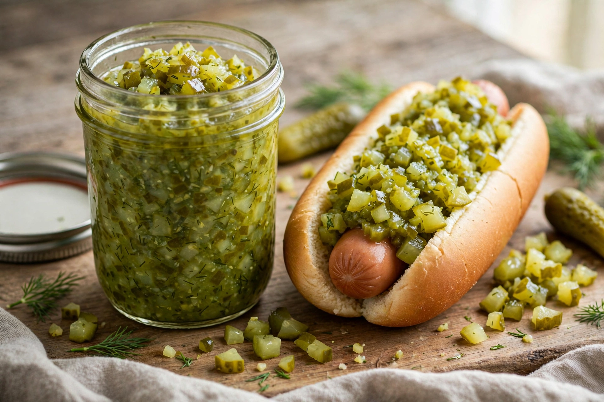

A relish is a cooked and pickled culinary dish made of chopped vegetables, fruits or herbs, used as a condiment to enhance a staple food. Relishes are typically finely cut and have a chunky or jam-like consistency.
In North America, the best-known relish is the pickle relish made from finely chopped pickled cucumbers, in sweet or dill varieties, commonly served on hot dogs and burgers; the vivid green 'neon' relish is a hallmark of the Chicago-style hot dog. Indian chutneys, such as mango chutney, are relishes, as are Balkan ajvar (red pepper), British piccalilli, and Indonesian sambals.
In the United States the word often refers specifically to pickle relish, whereas in British and Commonwealth usage 'relish' covers a broader family of savoury sauces and pickles. Commercially, brands such as Heinz produce widely distributed sweet pickle relish.